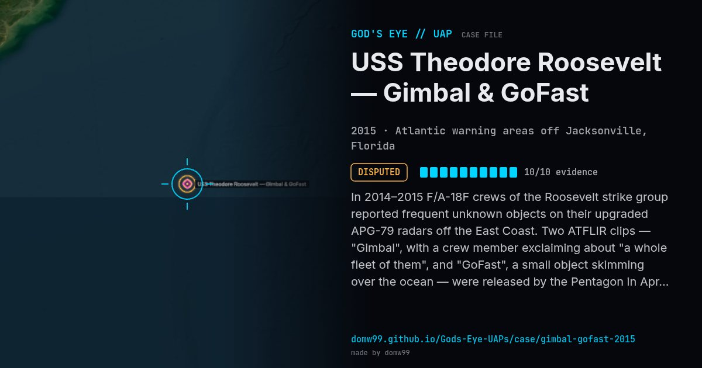

USS Theodore Roosevelt — Gimbal & GoFast

In 2014–2015 F/A-18F crews of the Roosevelt strike group reported frequent unknown objects on their upgraded APG-79 radars off the East Coast. Two ATFLIR clips — "Gimbal", with a crew member exclaiming about "a whole fleet of them", and "GoFast", a small object skimming over the ocean — were released by the Pentagon in April 2020.
Explanation
Both videos were officially released and remain "unidentified" per DoD. Analysts such as Mick West argue GoFast shows a slow object (e.g. a balloon) at ~13,000 ft that only looks fast and low because of parallax, and that Gimbal’s rotation is a glare artifact of the ATFLIR pod. AARO later published a case resolution for GoFast worked out from the sensor’s geometry and the winds aloft.
What was seen
Shape: Rotating lozenge (Gimbal); small fast object (GoFast)
Witnesses: VFA-11 aircrew; Lt. Ryan Graves’ squadron reported near-daily objects
Duration: Seconds of video; months of sightings